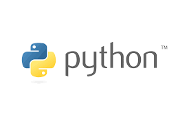

Szeretnél Pythonban programozni de nem tudod az alapokat? Hagy segítsünk!
A Python egy nagyon népszerű, könnyen olvasható és tanulható kódnyelv. Egyszerűsége miatt ideális választás kezdőknek, de rendkívüli sokoldalúsága miatt a profik is előszeretettel használják.
Ebben az áttekintésben az alap pythonban használatos eszközökről lesz szó.

Paython-ban az elágazásokat akkor használjuk ha egy kódnak több kimenetele is lehet.
Erre az "if", "elif" és az "else" parancsokat használjuk.
Ha a feltétel beteljesedik akkor az "if" alá írt program fut le. Ha viszont nem akkor az else alatti program fut le.
Ha viszont egy másik feltételt akarunk megadni az "elif" parancsot használjuk.
Python-ban a ciklusokat akkor használjuk ha egy parancsot többször akarunk lefuttatni, vagy valamin át akarunk menni.
"While" ciklust akkor használunk ha valamit futtatni akarunk ameddig egy feltétel igaz.
"For" ciklust akkor használunk ha át akarunk menni egy listán, szöveges dokumentumon stb. Elemenként vizsgáljuk a tartalmukat.
Python függvényeket a "def" parancsal tudunik definiáni majd egyszerűen meghívni késöbb.
A függvényeket alapszinten arra használjuk ha egy már megírt programot csak le akarunk futtatni gyorsan és egyszerűen anélkül hogy megkéne írjuk újra.
A kivétel kezelés hasonló az elágazásokhoz. Elsősorban a "try" és "except" parancsokkal tudunk kivételt kezelni. A Pythonban a kivételkezelést arra használjuk, hogy megakadályozzuk a program hirtelen összeomlását futásidejű hibák esetén.
Python-ban egy fájlt az "open()" parancsal tudunk beolvasni majd kezelni.
"For" ciklussal tudjuk sorokra bontani a szöveges fáljt. Fontosabb parancsok közé tartoznak a ".splitlines()", ".read()", ".split()" parancsok.
| Név | Parancsok | Rövid emlékeztető |
|---|---|---|
| Elágazás | if, elif, else | Ha beteljesül, még egy feltétel, ha nem |
| Ciklusok | While, for | Addig fut ameddigbetljesül, végigmegy valamin |
| Függvények | def, return | Előre megírt programok kényelmes lekérése |
| Kivétel kezelés | try, except, finally | Program összeomlás elhárítása |
| Fáljkezelés | open, read, split, splitlines stb. | Fájlok kezelése |